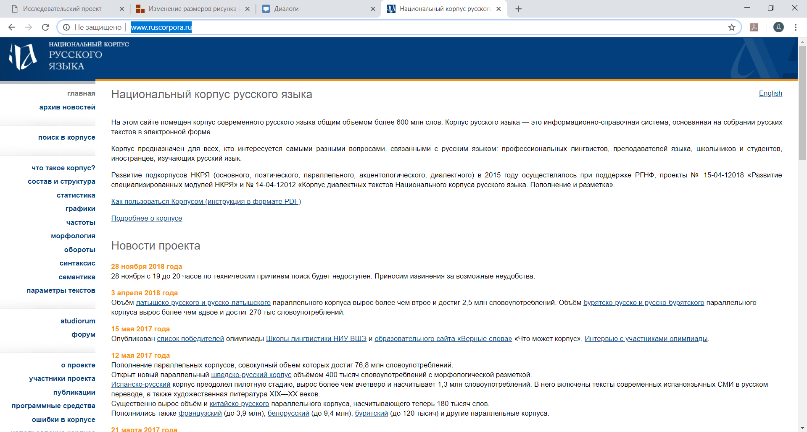
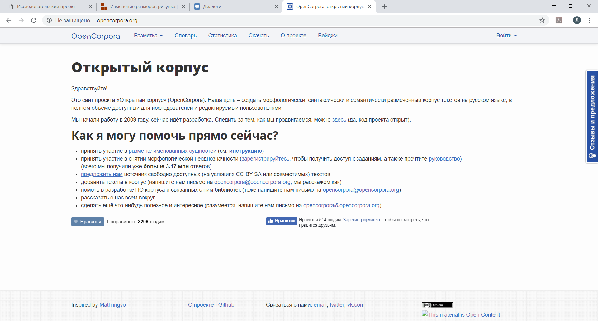
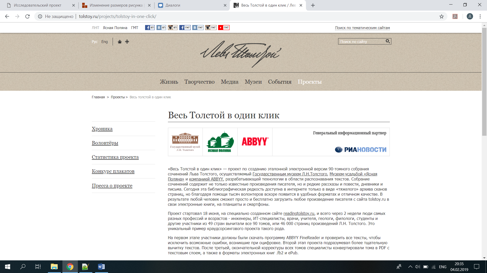
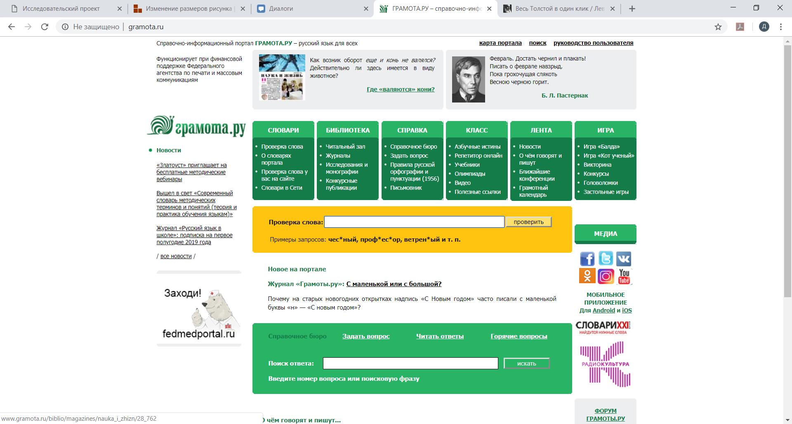
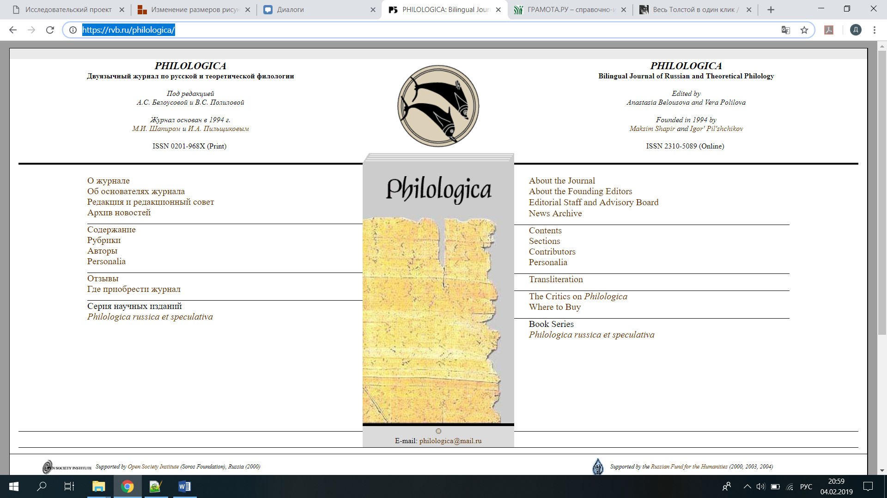
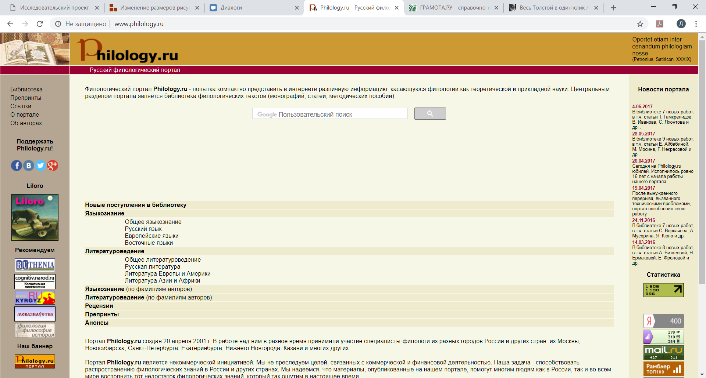

Современные технологии и филология
Исследователь: Дронова Дарья Алексеевна
Высшая Школа Экономики
Научные интересы: Поэзия серебряного века; Изучение биографии русских поэтов
Занимаюсь профессионально фехтованием, однако это не мешает мне хорошо учиться

Как современные технологии могут помочь филологу?
Ссылка на интересную статью по этой теме
Современные технологии могут помочь филологу как в поиске нужной информации, так и в работе с этими данными. Они открывают любителям литературы возможность легко находить важные сведения, в том числе и различные архивные данные. Также современные технологии помогают филологам общаться со своими иностранными коллегами.
Достоинства и недостатки сайтов из списка:
Сайт НКРЯ (1):

Достоинства:
- ИХ НЕТ
Недостатки:
- нет удобного поиска информации
- когда ищешь информацию по годам, ты вынужден листать 10000000 страниц
- неполная база
- очень сложные фильтры, которые только усложняют поиск данных
Самый ужасный сайт (2):

Достоинства, как у сайта с НКРЯ:
- ИХ НЕТ
Недостатки:
- нет удобного поиска информации
- сайт оформлен в черно-белом цвете - это убивает желание там находиться
- домашняя страничка сайта пугает
Сайт по творчеству Л.Н.Толстого (3):

Достоинства:
- достаточно удобная система поиска
- есть возможность переключить сайт на другой язык
Недостатки:
- нет возможности написать комментарии или отзывы
- сайт выглядит пустовато, поскольку оформлен в бежевом цвете
Самые удобные сайты:
Сайт (4)

Сайт (5)

Достоинства:
- достаточно удобная система поиска
Недостатки:
- нет
не очень удобный сайт(6):

Достоинства:
- красивенький
Недостатки:
- ужасная система поиска